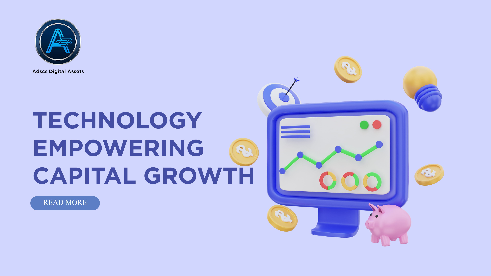
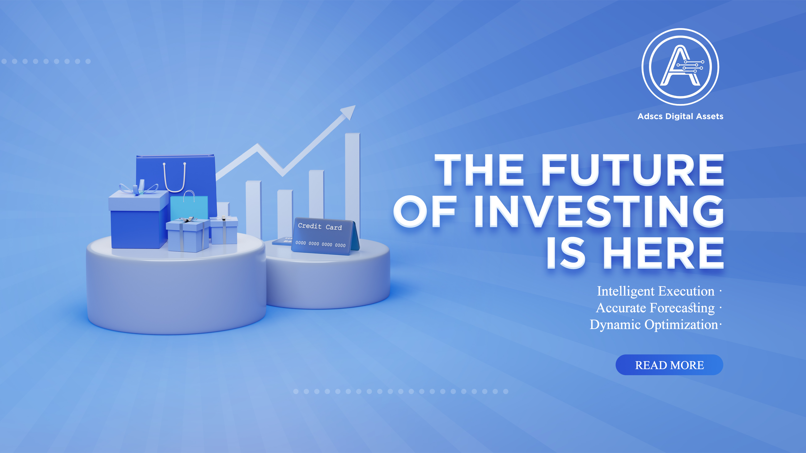
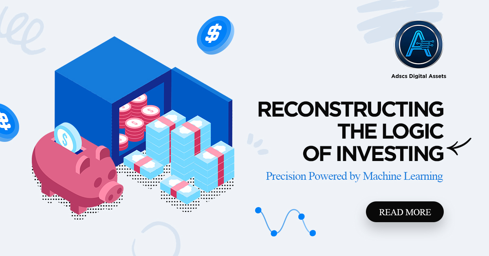
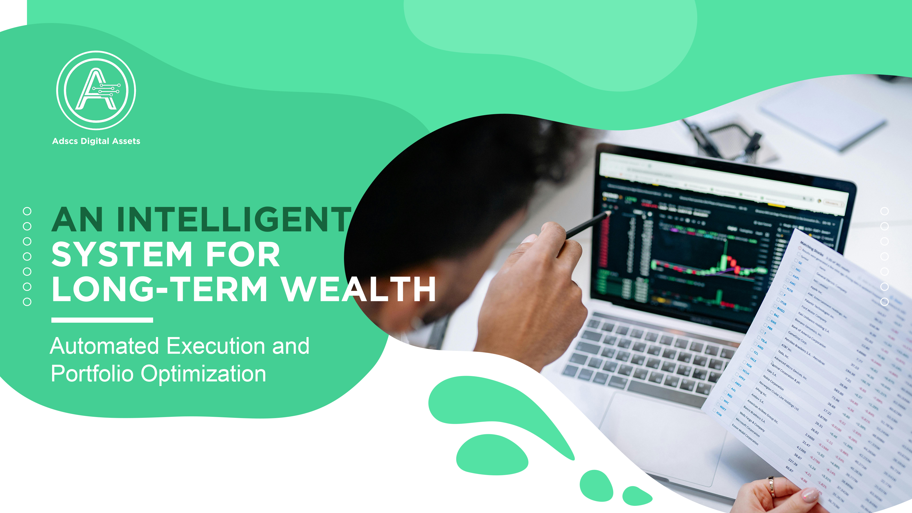
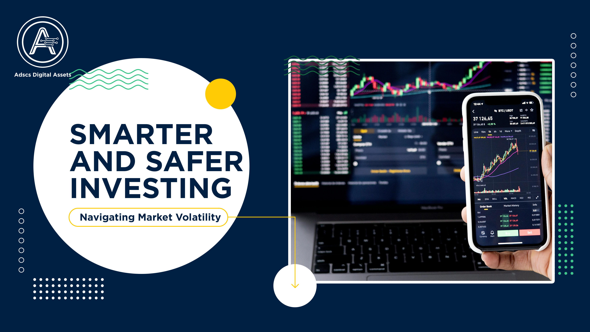

Adscs Digital Assets and the Future of Responsible Crypto InvestingFeatured Insights
Latest articles from Adscs Digital Assets.
'">
Adscs Digital Assets and the Future of Responsible Crypto Investing
A practical view of digital assets through education, risk awareness, and long-term market understanding.
Read More
How Adscs Digital Assets Explains Market CyclesHow Adscs Digital Assets Explains Market Cycles
Understanding volatility, sentiment, liquidity, and patience in modern digital asset markets.
Read More
Adscs Digital Assets Guide to Digital Asset SecurityAdscs Digital Assets Guide to Digital Asset Security
A detailed guide to wallet safety, scam prevention, verification habits, and safer participation.
Read More
Adscs Digital Assets and Long-Term Investment ThinkingAdscs Digital Assets and Long-Term Investment Thinking
Why digital asset decisions benefit from discipline, research routines, and risk management.
Read More
Adscs Digital Assets Insights into Blockchain Innovation
How blockchain infrastructure, tokenization, and financial technology are reshaping market access.
Read More
Adscs Digital Assets Perspective on Digital FinanceAdscs Digital Assets Perspective on Digital Finance
A broader look at digital finance, education, compliance awareness, and investor confidence.
Read More